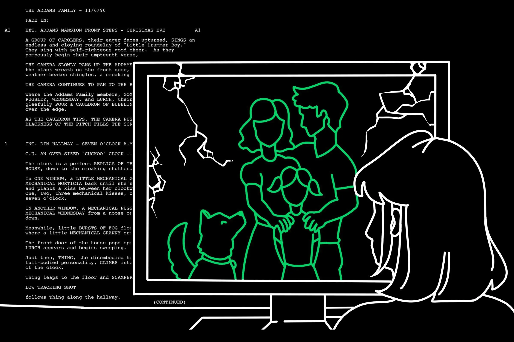

Skip to Main Content
Home
Reviews
Longform Writing
Notebook Samples
"Dune" isn't worthy of your praise
"Bodies Bodies Bodies," internet gossip and pseudo-intellectural arts criticism
Why "The Haunting of Hill House" is a perfect adaptation
Six spooky horror-comedies to kick off October right
On Nancy Drew, Scooby-Doo and the mysteries of childhood
The concert, the sun and the holy spirit of Lorde’s "Solar Power"
This is not the Luke Skywalker you’re looking for
Whether you realize it or not, Netflix is just another social media app
Phoebe Bridgers knows the end, but how do we deal with the ending?
Why I hate classic rom-com endings

Not-your-average family sitcom pilot
The fatal flaw of teen TV
Thankful for Thanksgiving TV
Spielberg’s "The Fabelmans" through the looking glass
All I want for Christmas is cable TV